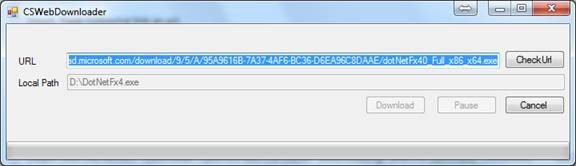
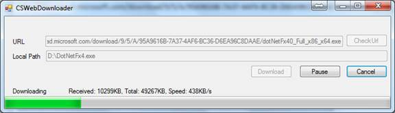
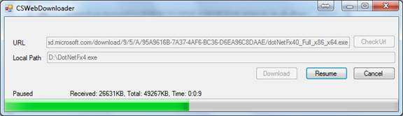
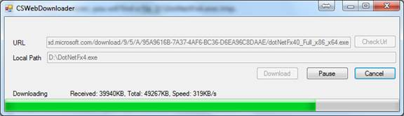
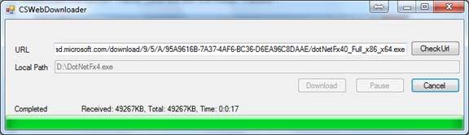
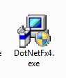

Show progress in downloading a file from web
How to Create a Simple Web Downloader and Show the Download Progress (CSWebDownloader)
Introduction
The sample demonstrates how to show progress during the download.
The class System.Net.WebClient has a DownloadProgressChanged event, and you can register this event to show the progress. But this class does not support Pause/Resume.
The class HttpDownloadClient in this sample could be used to download data through internet and supports following features:
1. Set the buffer and cache size.
2. Download a specified block data of the whole file.
3. Start, Pause, Resume and Cancel a download.
4. Supply the file size, download speed and used time.
5. Expose the events StatusChanged, DownloadProgressChanged and DownloadCompleted.
NOTE: To enable the Feature2 and Feature3, the server must support the http "Accept-Ranges" header.
Running the Sample
Step1. Build the sample project in Visual Studio 2012.
Step2. Run CSWebDownloader.exe
Step3. Type following link as url.
http://download.microsoft.com/download/9/5/A/95A9616B-7A37-4AF6-BC36-D6EA96C8DAAE/dotNetFx40_Full_x86_x64.exe

Step4. Type a local path like D:\DotNetFx4.exe.

Step5. Click the button "Download", you will see the status "Downloading".

In Windows Explorer, you will find a file D:\DotNetFx4.exe.tmp.

Step6. Click the button "Pause", you will see the status "Paused".

If the server does not support "Accept-Ranges" header, the "Pause" button is disabled.
Step7. Click the button "Resume", you will see the status "Downloading".

Step8. When the download completes, you will see the status "Completed".

In Windows Explorer, you will find a file D:\DotNetFx4.exe.

Using the Code
How can i check if file download completed